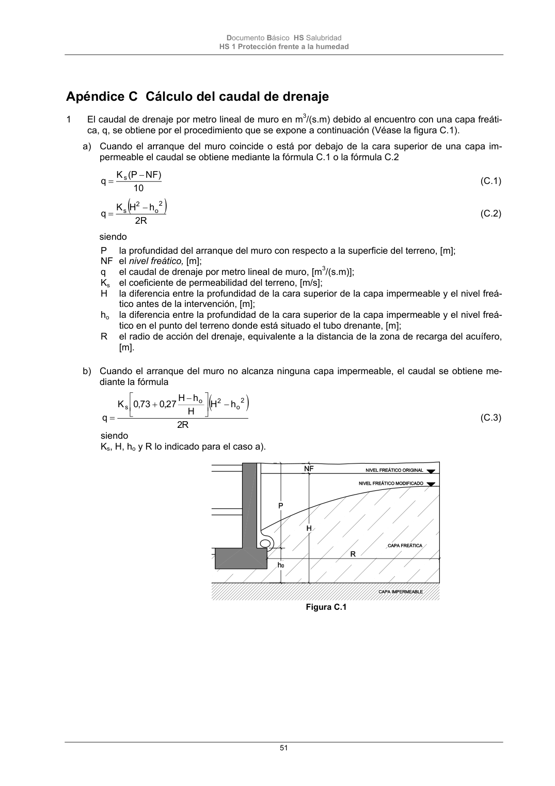

DB-HS Salubridad · edición 2022-06-14 · capa oficial
Documento DB-HS-oficial · SHA-256 del PDF 68df3caacc95f71aee2ec1ba7b2c65ae66155c21e3a8785521b8fdd4fd640d3b
Copia fiel del PDF fuente · Fuente oficial
Ficha de la disposición en la fuente oficial
Formatos: JSON del segmento · Markdown
2R h H K q 2 o 2 s (C.2) siendo P la profundidad del arranque del muro con respecto a la superficie del terreno, [m]; NF el nivel freático, [m]; q el caudal de drenaje por metro lineal de muro, [m3/(s.m)]; Ks el coeficiente de permeabilidad del terreno, [m/s]; H la diferencia entre la profundidad de la cara superior de la capa impermeable y el nivel freá- tico antes de la intervención, [m]; ho la diferencia entre la profundidad de la cara superior de la capa impermeable y el nivel freá- tico en el punto del terreno donde está situado el tubo drenante, [m]; R el radio de acción del drenaje, equivalente a la distancia de la zona de recarga del acuífero, [m]. b) Cuando el arranque del muro no alcanza ninguna capa impermeable, el caudal se obtiene me- diante la fórmula R 2 h H H h H 27 ,0 73 ,0 K q 2 o 2 o s (C.3) siendo Ks, H, ho y R lo indicado para el caso a). Figura C.1
